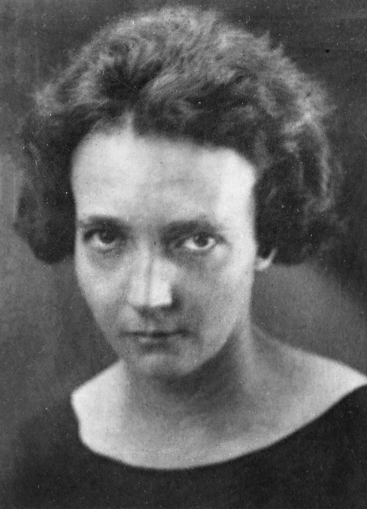
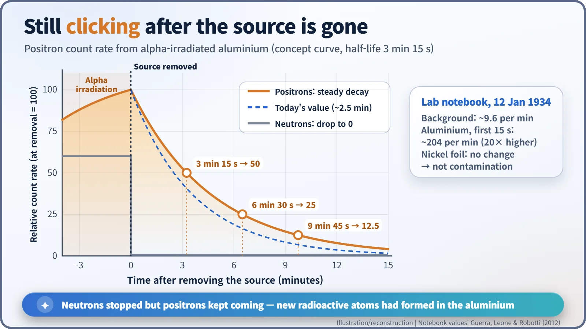
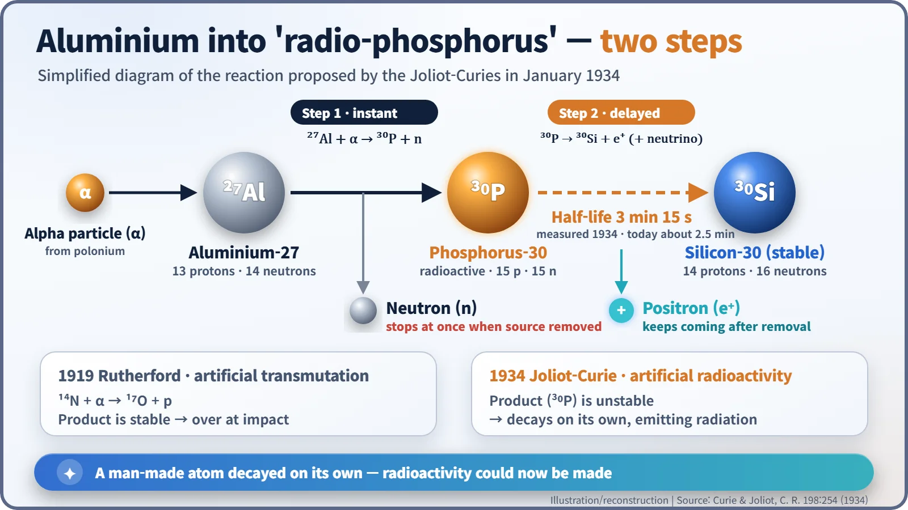
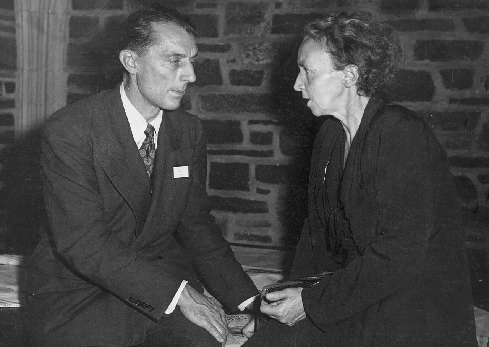

Nuclear History · 052
Still Clicking After the Source Was Gone — The Joliot-Curies Create Artificial Radioactivity (1934)
A Geiger counter kept clicking after the polonium source was taken away, and the Joliot-Curies realised they had made a radioactive phosphorus that nature does not provide.
On 11 January 1934, in Paris, Frédéric Joliot and Irène Curie found that aluminium bombarded with alpha particles kept emitting positrons after the source was taken away, with a half-life of about three minutes. They had made a radioactive isotope of phosphorus that does not exist in nature. It was the first time people had created radioactivity, and it won them the 1935 Nobel Prize in Chemistry.
A note on the desk
Friday morning, 12 January 1934, the Radium Institute (Institut du Radium) in Paris. On Frédéric Joliot's desk lay a short note from Wolfgang Gentner, a young German researcher at the institute. The gist of it: the counter is working fine.
The afternoon before, Frédéric Joliot (1900–1958) had seen something hard to believe. But he and his wife had a dinner engagement that evening, so he asked Gentner to check whether his new detector was faulty. If the instrument was sound, only one conclusion remained. For the first time, people had made radioactivity. [3]

A couple who had stopped at the threshold twice
The story belongs to Irène Joliot-Curie (1897–1956), Marie Curie's elder daughter, and her husband Frédéric. In 1932 they had come painfully close to two great discoveries. Their experiments contained clues to the neutron and to the positron, but they did not interpret them correctly, and the credit went to James Chadwick and Carl Anderson.
At the Solvay Conference in Brussels at the end of October 1933, they reported that aluminium bombarded with alpha particles gives off neutrons and positrons together, and the claim drew heavy criticism. Yet in the same discussion Francis Perrin offered an intriguing idea: perhaps an unstable phosphorus atom forms in between and then breaks down by emitting a positron. Historians now see that suggestion as a key thread leading to the discovery three months later. [3]
What Joliot saw on the afternoon of 11 January
Joliot changed his method. Instead of a cloud chamber, which photographs a single instant, he used a Geiger–Müller counter, which registers incoming particles one by one, click by click, so you can follow how a signal changes over time.
Their paper, presented on 15 January, describes the set-up. A thin aluminium foil was placed 1 mm from a polonium source and exposed to its alpha rays for about 10 minutes. Placed over the counter, the foil emitted radiation whose intensity fell off exponentially with a half-life of 3 minutes 15 seconds. [1] [7]
The key was what happened after the source was taken away. Cut off the alpha particles, and the neutrons stopped at once. The positrons, however, kept coming for several minutes. Joliot's laboratory notebook shows a background of about 9.6 counts per minute; with the irradiated aluminium in place, the rate in the first quarter-minute jumped to about 204 counts per minute, more than twenty times higher. A nickel foil produced no change, so the effect was not contamination of the source. Boron and magnesium behaved the same way as aluminium. [3] [8]

Fireworks versus a time-delay fuse
What was new? In 1919 Ernest Rutherford had turned nitrogen into oxygen, the first artificial nuclear transmutation. That was like fireworks: the reaction happened at the instant of impact, the oxygen produced was stable, and that was the end of it. In her Nobel lecture, Irène described all the nuclear reactions induced until then as "instantaneous phenomena, explosions". [5]
The Joliot-Curies' aluminium was different. When aluminium-27 swallows an alpha particle and spits out a neutron, it becomes phosphorus-30, and this phosphorus is unstable. On its own it emits a positron and turns into silicon-30. It was as if a time-delay fuse had been planted inside the atom, still ticking after the reaction was over. A positron is the electron's mirror twin with a positive charge; it is emitted when a proton in the nucleus turns into a neutron.

The couple nailed the point down with chemistry too. When they dissolved irradiated aluminium in hydrochloric acid, the radioactivity left with the escaping gas, showing that an element other than aluminium had formed. Only a few million atoms were made, and the work had to be finished in about six minutes. Today's measured half-life of phosphorus-30 is about 2.5 minutes, a little shorter than the 1934 value. [4]
The last discovery Marie Curie saw
The announcement was remarkably fast. On 15 January, less than four days after the first observation, Jean Perrin presented the paper to the French Academy of Sciences, and Nature published an English report in its 10 February issue. Rutherford wrote to congratulate them on a "fine piece of work which I am sure will ultimately prove of much importance". [2] [3] [8]
Marie Curie lived to see it. In his Nobel lecture Frédéric said: "It was indeed a great source of satisfaction for our lamented teacher Marie Curie to have witnessed this lengthening of the list of radio-elements." According to a story often told, she was overjoyed when shown a small glass tube of the new radioactive phosphorus; that scene has not been confirmed from a first-hand record. Marie Curie died on 4 July 1934 and did not see the 1935 Nobel Prize in Chemistry, the third Nobel Prize in the family. [4] [6]
Radioactivity on demand, and what came next
Laboratories elsewhere quickly tried other "bullets": protons and deuterons in Britain and the United States, and, in Rome from March 1934, Enrico Fermi's neutrons. By December 1935 Frédéric could report that "more than fifty new radio-elements" had been made.
In the same lecture he looked ahead in two directions. One was the use of artificial radio-elements as tracers in living organisms, and probably in medicine: the seed of today's nuclear medicine. The other was darker. He imagined scientists "building up or shattering elements at will" and bringing about "transmutations of an explosive type, true chemical chain reactions", carried out, he added, "taking, we hope, the necessary precautions". Nuclear fission would be discovered three years later. [4]
